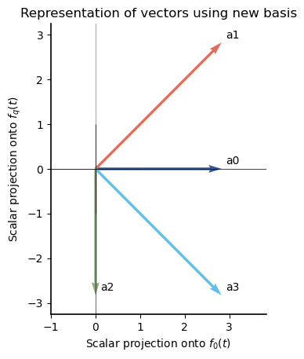
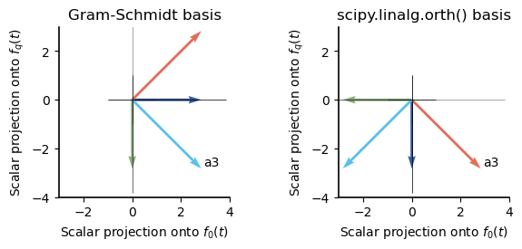
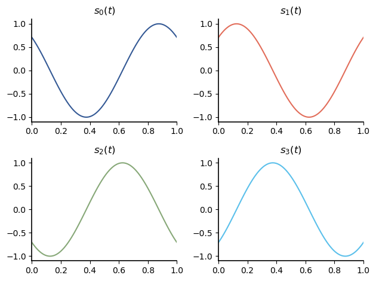
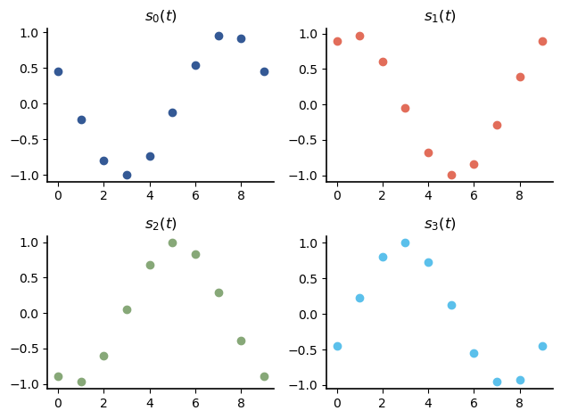
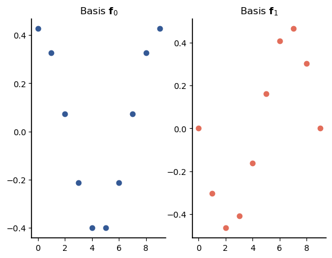
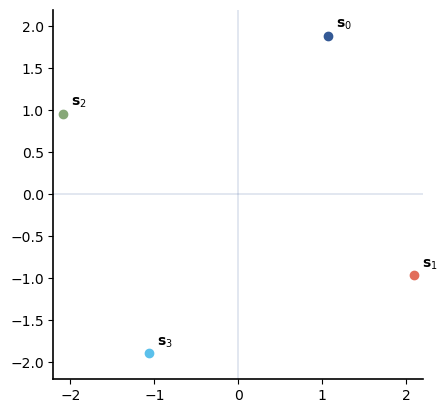
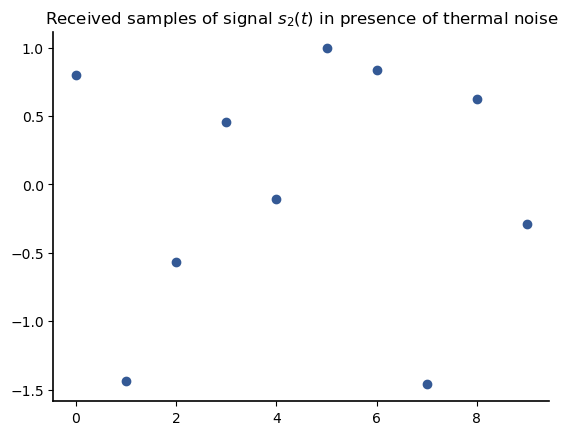
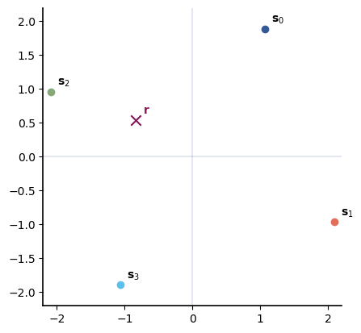
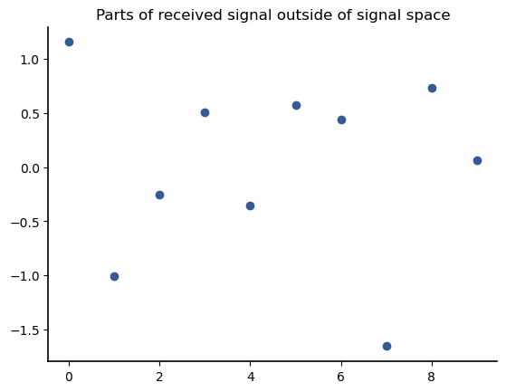

Set-Specific Bases: The Gram-Schmidt Algorithm
Contents
13.5. Set-Specific Bases: The Gram-Schmidt Algorithm#
In the previous section, we showed one example of universal bases that consists of complex sinusoids: the DFT matrix. The advantage of a universal basis is that it can represent every vector in some vector space \(\mathbb{R}^n.\) The disadvantage is that the cardinality of a universal basis in \(\mathbb{R}^n\) is always \(n\).
In this section, we consider finding a set-specific basis and show that such a basis can have a much smaller cardinality than a universal basis. Consider the vectors \(\mathcal{S}_a = \{ \mathbf{a_0}, \mathbf{a_1}, \mathbf{a_2}, \mathbf{a_2} \}\), where
These vectors are from \(\mathbb{R}^8\), so a universal basis would consist of 8 vectors. Let’s see if we can find a smaller basis. Let \(\mathbf{f}_i\) be the \(i\)th basis vector. We iterate through the signals one-by-one. We will end up with different bases depending on the order in which we iterate over the signals, but for this example, we will iterate over them in numerical order.
Signal \(\mathbf{a}_0(t)\)
We start with \(\mathbf{a}_0\) and create the basis vector \(\mathbf{f}_0\) by normalizing it:
import numpy as np
from numpy.linalg import norm
a0 = np.array([1, 1, 1, 1, -1, -1, -1, -1])
f0= a0/norm(a0)
print(f0)
[ 0.35355339 0.35355339 0.35355339 0.35355339 -0.35355339 -0.35355339
-0.35355339 -0.35355339]
Note that \(\| \mathbf{a}_0\|^2 = 8\), so it is easier to see \(\mathbf{f}_0\) mathematically as
Then the projection of \(\mathbf{a}_0\) onto \(\mathbf{f}_0\) is
Let’s check numerically:
a0@f0
2.82842712474619
Signal \(\mathbf{a}_1(t)\)
To find a second basis vector, we start out by finding the scalar projection of \(\mathbf{a}_1\) onto the basis vector \(\mathbf{f}_0\):
a1 = np.array( [ 0, 2, 2, 0, 0, -2, -2, 0] )
a1@f0
2.82842712474619
Then the part of \(\mathbf{a}_1\) that cannot be represented by \(\mathbf{f}_0\) can be found by subtracting the vector projection of \(\mathbf{a}_1\) onto \(\mathbf{f}_0\) from the vector \(\mathbf{a}_1\)
e1 = a1 - (a1@f0)*f0
print(e1)
[-1. 1. 1. -1. 1. -1. -1. 1.]
which has norm
norm(e1)
2.8284271247461903
Since the error signal has a nonzero norm, we need another basis function that is orthogonal to \(\mathbf{f}_0\). Fortunately, the error signal is always orthogonal to the previous basis functions. Let’s check for this example (here I have used np.round() because numerical computation errors result in a very small dot product when it should be zero):
np.round(e1@f0, 10)
0.0
Then to create our second basis vector, we can simplify normalize the error vector \(\mathbf{e}_1\):
f1 = e1 / norm(e1)
print(f1)
[-0.35355339 0.35355339 0.35355339 -0.35355339 0.35355339 -0.35355339
-0.35355339 0.35355339]
As with \(\mathbf{f}_0\) it is easier to write this mathematically as
The projection of \(\mathbf{a}_1\) onto \(\mathbf{f}_1\) is
a1 @ f1
2.8284271247461907
which is the norm of \(\mathbf{e}_1\).
Signal \(\mathbf{a}_2(t)\)
Note that it turns out that we could also write
Another way to interpret this is that \(\mathbf{a}_2\) is in the direction of \(\mathbf{f}_1\). Thus, when we find the scalar product of \(\mathbf{a}_2\) with \(\mathbf{f}_0\), it should be zero:
a2 = np.array( [1, -1, -1, 1, -1, 1, 1, -1] )
a2@f0
0.0
And we can see that we can write \(\mathbf{a}_2 = - \sqrt{8} \mathbf{f}_1\), which matches the result from the numerical projection,
print(-(f1*np.sqrt(8)))
print( a2.astype(float))
[ 1. -1. -1. 1. -1. 1. 1. -1.]
[ 1. -1. -1. 1. -1. 1. 1. -1.]
There is no remaining error, so we do not need any new basis function.
Signal \(\mathbf{a}_3(t)\)
Last, we try to represent \(\mathbf{a}_3\). The scalar projection of \(\mathbf{a}_3\) onto \(\mathbf{f}_0\) is
a3 =np.array( [ 2, 0, 0, 2, -2, 0, 0, -2] )
a3@f0
2.82842712474619
and the scalar projection of \(\mathbf{a}_3\) onto \(\mathbf{f}_1\) is
a3@f1
-2.8284271247461894
The error signal can be calculated by subtracting the sum of the vector projections from \(\mathbf{a}_3\),
e3 = a3 - ((a3@f0)*f0 + (a3@f1)*f1)
np.round(e3, 10)
array([ 0., 0., 0., 0., -0., -0., -0., -0.])
Since the error signal is the zeros vector, we do not need to create a new basis vector.
Signal Set Dimensionality
Two basis vectors are sufficient to represent all the signals in \(\mathcal{S}_a\). Thus the dimension of this signal set is 2. In comparison, a universal basis would require 8 basis vectors.
13.5.1. Signal Space Representation#
Every vector in our signal set can be expressed as a linear combination of the vectors in our orthonormal basis. If there are \(N\) basis functions \(\mathbf{f}_0, \mathbf{f}_1, \ldots, \mathbf{f}_{N-1}\), then we can write
Here, each coefficient of the linear combination is given by the scalar projection of \(\mathbf{a}\) onto the basis \(\mathbf{f}_k,\) which is \(a_{ik} = \mathbf{a}_i \cdot \mathbf{f}_k\). Then each vector in our set can be represented in the new basis as
Since the new representation occupies only two dimensions, we can now plot these vectors.
import matplotlib.pyplot as plt
from plotvec import plotvec
A= [a0, a1, a2, a3]
Areps= []
print('vector | representation in new basis')
for i in range(4):
ap0 = A[i]@f0
ap1 = A[i]@f1
Areps += [np.array([ap0, ap1])]
print(f'{i:^7}| [{ap0:.2f}, {ap1:>5.2f}]')
plotvec([ap0, ap1], color_offset=i, newfig=False, width=0.012)
plt.annotate(f'a{i}', (ap0 + 0.1, ap1 + 0.1))
plt.ylim(-3.25, 3.25)
plt.xlabel('Scalar projection onto $f_0(t)$')
plt.ylabel('Scalar projection onto $f_q(t)$')
plt.title('Representation of vectors using new basis');
print()
vector | representation in new basis
0 | [2.83, 0.00]
1 | [2.83, 2.83]
2 | [0.00, -2.83]
3 | [2.83, -2.83]

We will call this a signal-space representation:
DEFINITION
- signal-space representation #
Representation of a set of signals (or vectors) in terms of an orthonormal basis.
13.5.2. Properties of Signal-Space Representations#
An import feature of signal-space representations is that they preserve the most important aspects of the original signal set. Given a set of signals \(\left\{ \mathbf{a}_i\right\}\), denote their representations in terms of an orthonormal basis as \(\left\{ \tilde{ \mathbf{a} }_i \right\}\). Then the signal-space representation has the following properties:
Inner-product preserving:
Norm preserving:
Distance preserving:
Properties 2 and 3 follow directly from Property 1. These properties ensure that our signal-space representation is meaningful. For instance, in our plot of the vectors using the signal-space representation, the lengths of the vectors are the norms of the original vectors, and we can measure the distance between vectors as the length of a vector connection the heads of those vectors.
Let’s check properties 2 and 3 for our example vectors:
print('Property 2:\n')
print(' i | Norm of original vector | Norm of signal-space rep')
print('-'*55)
for i in range(4):
print(f'{i:^3}|{norm(A[i]):^25.1f}|{norm(Areps[i]):^25.1f}')
Property 2:
i | Norm of original vector | Norm of signal-space rep
-------------------------------------------------------
0 | 2.8 | 2.8
1 | 4.0 | 4.0
2 | 2.8 | 2.8
3 | 4.0 | 4.0
print('Property 3:\n')
print(' i, k | Dist for original vectors | Dist for signal-space reps')
print('-'*62)
for i in range(4):
for k in range(0,4):
print(f'{i:>2}, {k:<2}|{norm(A[i] - A[k]):^27.1f}|'
+f'{norm(Areps[i] - Areps[k]):^27.1f}')
print()
Property 3:
i, k | Dist for original vectors | Dist for signal-space reps
--------------------------------------------------------------
0, 0 | 0.0 | 0.0
0, 1 | 2.8 | 2.8
0, 2 | 4.0 | 4.0
0, 3 | 2.8 | 2.8
1, 0 | 2.8 | 2.8
1, 1 | 0.0 | 0.0
1, 2 | 6.3 | 6.3
1, 3 | 5.7 | 5.7
2, 0 | 4.0 | 4.0
2, 1 | 6.3 | 6.3
2, 2 | 0.0 | 0.0
2, 3 | 2.8 | 2.8
3, 0 | 2.8 | 2.8
3, 1 | 5.7 | 5.7
3, 2 | 2.8 | 2.8
3, 3 | 0.0 | 0.0
13.5.3. Gram-Schmidt Process#
The procedure we conducted above for finding an orthonormal basis will work for any set of vectors, and is called the Gram-Schmidt Process. The general algorithm is shown below:
Given indexed vectors \(a_0, a_1, \ldots, a_{K-1}\).
Let \(i=0\). Let \(\mathcal{F}=()\) be the ordered collection of basis vectors (initalized to empty
For \(j=0, \ldots, |F|-1\): calculate the scalar projection of \(\mathbf{a}_i\) onto each of the basis vectors: \(a_{ij}=\mathbf{a}_{i} \cdot \mathbf{f}_j\)
Calculate the error vector \(\mathbf{e}_i\), which is the part of \(\mathbf{a}_i\) that is orthogonal to all the basis vectors up to this point: \(\mathbf{e_i} = \mathbf{a}_i - (a_{i0} \mathbf{f}_0 + a_{i1} \mathbf{f}_1 +\cdots)\)
If \(\|\mathbf{e}_i\|=0\), then \(\mathbf{a}_i\) can be completely represented in terms of the basis vectors in \(\mathcal{F}\). Increment \(i\) (\(i=i+1\)) and go to step 2.
Else normalize the error vector to create a new basis vector: $\( \mathbf{f}_{|\mathcal{F}|} = \mathbf{e}_1/ \left| \mathbf{e}_i\right\| \)$ and go to step 2.
In practice, step 4 needs to be modified to check if \(\left \Vert \mathbf{e}_i \right\Vert < \epsilon\) because limits of floating point computation often result in values that should be zero returning some small value instead.
13.5.4. Dimensionality and Linear Independence#
The dimension of a set of vectors is related to the concept of linear dependence:
DEFINITION
- linearly dependent vectors#
A set of vectors \(\left\{\mathbf{a}_0, \mathbf{a}_1, \ldots, \mathbf{a}_{k-1} \right\}\) are linearly dependent if any of these vectors can be written as a linear combination of the other. An equivalent condition is if there exist nonzero constants \(\beta_0, \beta_1, \ldots, \beta_{k-1}\) such that
\[\begin{equation*} \beta_0 \mathbf{a}_0 + \beta_1 \mathbf{a}_1 + \ldots + \beta_{k-1} \mathbf{a}_{k-1} =\mathbf{0}. \end{equation*}\]
Using the second condition, we can show that for linearly dependent vectors, any of the vectors can be written as a linear combination of the other vectors.
The dimension of a set of signals is the same as the maximum number of linearly independent vectors in the set:
DEFINITION
- linearly independent vectors#
A set of vectors that is not linearly dependent. For a set of vectors \(\{\mathbf{a}_0, \mathbf{a}_1, \ldots, \mathbf{a}_{k-1}\}\) and scalar variables \(\beta_0, \beta_1, \ldots, \beta_{k-1}\), the only solution to the equation
\[\begin{equation*} \beta_0 \mathbf{a}_0 + \beta_1 \mathbf{a}_1 + \ldots + ta_{k-1} \mathbf{a}_{k-1} =\mathbf{0}. \end{equation*}\]is if \(\beta_0 = \beta_1 = \ldots = \beta_{k-1} =0\).
In general, it can be difficult to tell if a set of vectors are linearly independent by inspection.A special case is a set of two non-zero vectors: they are linearly independent unless they are scaled versions of each other. Fortunately, NumPy has functions that can help us determine whether a set of vectors is linearly independent. The first step is to stack the vectors into either the rows or the columns of a matrix. Vectors are usually treated as column vectors and stacked in the columns of a matrix.
For an example, let’s create a matrix \(\mathbf{A}\) whose columns are the vectors \(\mathbf{a}_0, \mathbf{a}_1, \mathbf{a}_2, \mathbf{a}_3\) from the example above. NumPy treats vectors like row vectors, so stacking them horizontally with np.hstack() will result in one long vector. Instead, we can stack them vertically using np.vstack() and then transpose the result to end up with the vectors in columns:
A = np.vstack((a0, a1, a2, a3)).T
A
array([[ 1, 0, 1, 2],
[ 1, 2, -1, 0],
[ 1, 2, -1, 0],
[ 1, 0, 1, 2],
[-1, 0, -1, -2],
[-1, -2, 1, 0],
[-1, -2, 1, 0],
[-1, 0, -1, -2]])
The maximum number of linearly independent columns of a matrix is always equal to the maximum number of linearly independent rows of a matrix. We call this number the rank of the matrix:
DEFINITION
- rank (of a matrix)#
Given a matrix \(\mathbf{M}\), the rank is equal to the maximum number of linearly independent columns (or, equivalently, the maximum number of linearly independent rows). It is denoted by \(\operatorname{rank} \mathbf{M}\).
The maximum possible rank for a \(m \times n\) matrix \(\min( m, n)\). If a matrix has the maximum possible rank, it is said to be full rank:
DEFINITION
- full rank matrix #
A matrix with the maximum possible rank, which is equal to the minimum of the number of rows and the number of columns.
We can find the rank of a matrix using NumPy’s np.linalg.matrix_rank() function:
np.linalg.matrix_rank(A)
2
If a matrix has full rank, then we can find a basis for the columns of the matrix using the NumPy command np.linalg.qr(), which gives the QR decomposition of the matrix. If the input is a matrix \(\mathbf{M}\), then the output is \(\mathbf{M} = \mathbf{Q} \cdot \mathbf{R}\), where \(\mathbf{Q}\) has orthogonal columns that are a basis for \(\mathbf{M}\).
However, if the matrix is not full rank, then the QR decomposition may not yield the minimum number of orthogonal basis functions. In general, it is better to use the SciPy function scipy.linalg.orth() to find a basis for the columns. The resulting basis vectors are in the columns of the returned matrix.
Let’s test this on our example:
import scipy.linalg
Q = scipy.linalg.orth(A)
print(Q)
[[-0.35355339 -0.35355339]
[ 0.35355339 -0.35355339]
[ 0.35355339 -0.35355339]
[-0.35355339 -0.35355339]
[ 0.35355339 0.35355339]
[-0.35355339 0.35355339]
[-0.35355339 0.35355339]
[ 0.35355339 0.35355339]]
To make this easier to compare with the basis we found using the Gram-Schmidt algorithm, let’s multiply it by \(\sqrt{8}\):
print(np.sqrt(8)*Q)
[[-1. -1.]
[ 1. -1.]
[ 1. -1.]
[-1. -1.]
[ 1. 1.]
[-1. 1.]
[-1. 1.]
[ 1. 1.]]
print(np.sqrt(8)*f0)
print(np.sqrt(8)*f1)
[ 1. 1. 1. 1. -1. -1. -1. -1.]
[-1. 1. 1. -1. 1. -1. -1. 1.]
The first column of \(\mathbf{Q}\) is the same as \(\mathbf{f_1}\) and the second column of \(\mathbf{Q}\) is the same as \(-\mathbf{f}_0\). Bases are not unique, but we can see that in this case they are very similar.
Below I show our original representation and the representation using the basis from scipy.linalg.orth() side by side. Although the representations are different, the norms and distances are the same using either representation:

13.5.5. Example Application: Detecting Communication Signals#
Modern wireless communication systems use digital communications, in which one or more bits of information are used to select a communication waveform to send. Quadrature phase-shift keying (QPSK) is a common signaling scheme that is used in both WiFi wireless local area networks and in cellular communication systems, such as LTE and 5G. QPSK conveys two bits in each signaling interval. In its simplest form, the waveforms for QPSK look like:
Here, \(A\) and \(\omega\) control the amplitude and frequency, respectively, of the signal; \(p(t)\) is a signal that limits the duration of the signal to 1 bit time.
These signals are shown below for \(A=1\), \(\omega = 2 \pi\), and

A digital receiver samples the received signal at multiple samples per symbol. In the absence of noise, the sampled signals are shown below for a sampling rate of 10 samples/symbol. The code below creates an array for which column \(i\) contains the samples of signal \(i\):
phases = [np.pi/4, -np.pi/4, 3*np.pi/4, -3*np.pi/4]
signals = np.zeros((10, 4))
t2 = np.linspace(0+1/20, 1+1/20, 10)
for signum in range(4):
signals[:,signum] = np.cos(2*np.pi*t2 + phases[signum])
These vector signals are shown with each component’s value plotted as a dot versus its index below:

We can find a basis for these signals using scipy.linalg.orth():
sig_basis = scipy.linalg.orth(signals)
print(sig_basis)
[[ 4.26401433e-01 3.92113053e-16]
[ 3.26642448e-01 -3.03012985e-01]
[ 7.40438317e-02 -4.64242827e-01]
[-2.13200716e-01 -4.08248290e-01]
[-4.00686280e-01 -1.61229842e-01]
[-4.00686280e-01 1.61229842e-01]
[-2.13200716e-01 4.08248290e-01]
[ 7.40438317e-02 4.64242827e-01]
[ 3.26642448e-01 3.03012985e-01]
[ 4.26401433e-01 4.99600361e-16]]
The signals have dimension two and the basis functions found are sampled cosine and sine waves, as shown below:

The signal-space representations of the signals are shown as points in the figure below:

This is called a signal constelation.
The power of this signal-space representation is that it can be used to make decisions about a noisy signal. The thermal noise in receivers results in the samples of the received signals being corrupted by noise that can be modeled as coming from a Normal distribution. Let’s create and plot an example of receiving the signal \(s_2(t)\) in the presence of thermal noise:
import scipy.stats as stats
np.random.seed(7)
N = stats.norm(0, 1)
noise = N.rvs(10)
r = signals[:,2] + noise
plt.scatter(range(10), r)
plt.title('Received samples of signal $s_2(t)$ in presence of thermal noise');

At the receiver, we need to take the received samples and decide which signal was sent. How to make this decision is unclear, though. From a visual comparison of the samples of the received signal and the possible transmitted signals, it seems difficult to know which signal was sent. To enable us to make a decision, let’s project the signal onto our basis:
r0 = r @ sig_basis[:,0]
r1 = r @ sig_basis[:,1]
print(f'The signal space representation of r is ({r0}, {r1})')
The signal space representation of r is (-0.8313904595143996, 0.5435528912779211)
This creates a received vector \(\mathbf{r}\). Plotting \(\mathbf{r}\) on our signal-space constellation shows that the received signal is closest to the \(\mathbf{s}_2\), and so that is the best decision:

Note that the received vector contains noise that lies outside of the signal space:
plt.scatter(range(10), r - (r0*sig_basis[:,0] + r1*sig_basis[:,1]))
plt.title('Parts of received signal outside of signal space');

By projecting the received vector into the signal space, this noise is effectively removed from the signal. Because all of the signal components are preserved in the signal space representation, an optimal decision can be made.
In the next section, we look at a simple example of how an alternative basis can be used in classification when we do not have a model for the data.